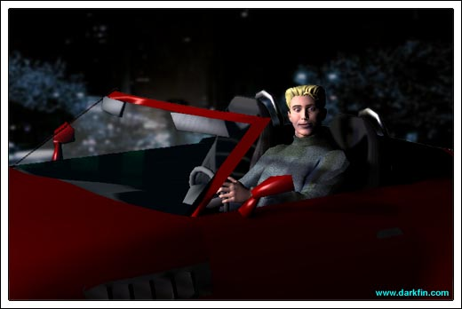
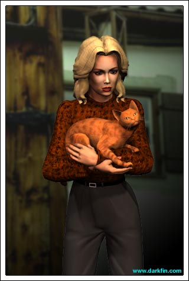
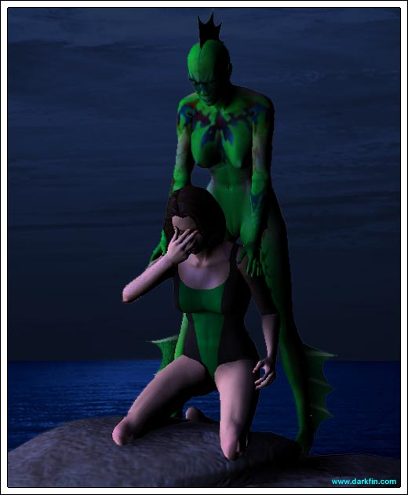

White Robe Your report
Blue One Our mission was successful
White Robe Has the priest transcended?
Blue Two Violently
White Robe Excellent - and McBride?
Blue One The prime suspect
White Robe So, everything went according to plan
White Robe (Noticing them) Did it?
Blue One (Hesitant) Yes...
Blue Two Except for one minor glitch
White Robe (Voice lowering an octave) GLITCH?
Blue One Morrigan was indeed lured to Saint Brendan's
White Robe That has already been established
Blue Two Unfortunately, she never actually set foot inside the church itself, she was outside in the parking lot and then abruptly left
Blue One (Nervous) It... it was as if she was warned somehow
White Robe BY WHOM?
Blue Two (Taking a step back) That, we do not know
Blue One But we will find out, I can assure you
Blue Two Morrigan was feeling ill, I believe her leaving so suddenly was legitimate in nature
White Robe (Approaching Blue Two) For both of your sakes, you better hope that this is true
Blue One The objective was met, Master
White Robe Maybe... but it will be more difficult to prove the Marked One's guilt
Blue Two I am fully confident in that we will be able to amend this matter and her guilt will be unquestionable
White Robe Make sure that it is - has she been in contact with The Other yet?
Blue One No, but we are certain that they will meet up again soon, especially after the circumstances of this evening
Blue Two We have subordinates keeping watch
White Robe She must not leave with her
Blue One How... how can we prevent that? - Aleta Oscura is most skilled, the last few times...
White Robe I AM WELL AWARE OF THE LAST FEW TIMES
Blue Two (Taking two more steps back) We are just wondering if we are allowed to prevent The Other from taking her by any means necessary?
White Robe (Grabbing Blue Two by the throat and choking him) NO, we need them separated but we need them both alive - IS THAT CONCISE ENOUGH FOR YOU?
Blue Two (Gasping) Yes... of course
White Robe (Throwing him down next to the other) It better be or the next "glitch" will be at the base of your brain stem

KJ (Glancing at Morrigan) Are you OK?
Morrigan (Looking out at the water) I don't understand why we left your sister off in the middle of Harbor Town?
KJ Her boat is docked at the marina
Morrigan She should be at a hospital for that cut over her eye
KJ She doesn't really care for doctors
Morrigan But she's a scientist?
KJ Heh, exactly - listen, she probably has some magic kelp cure or whatever brewing up in the SCU lab for that eye
Morrigan That's a little creepy
KJ It's her job - pharmaceutical companies are constantly banging at her door for the next big wonder drug - there's great hope in the ocean
Morrigan Right - when we're done plundering the rainforests, we can turn our attentions there!
KJ It's called progress
Morrigan Tell THAT to the Dodo bird
KJ I spoke to Griffin earlier and he's cool about the car
Morrigan Very funny, but I'm still worried about your sister - the way my luck is running tonight, I don't need her blinded by my poor driving
KJ One thing I've learned since the age of four is that Erika generally knows how to take care of herself - you really don't need to worry
Morrigan I suppose
KJ (Taking Morrigan's hand) I am more worried about you
Morrigan (Snippy) Are you saying I can't take care of myself?
KJ No, not at all - it's just that you fell into some serious shit here tonight, Morri, and I'm afraid it's going to get worse
Morrigan Heh, count on it!
KJ What do you mean?
Morrigan I'm being set up because of a story I'm pursuing
KJ What's it about?
Morrigan I can't say... not yet
KJ OH, C'MON HERE
Morrigan I'm sorry, KJ, but it's just too important and I'm not going to risk it
KJ You do realize what you're facing here? - Murder One of a beloved priest in a state that has the death penalty - can it be any clearer?
Morrigan My story has more riding on it
KJ (Doing a double take) YOU'RE FREAKING SERIOUS - unless it's about space aliens firing death rays at our nation's capital, I don't think so!
Morrigan (Recognizing a beach she met Darkfin at before) Pull over
KJ WHAT?
Morrigan PULL OVER, I want to walk the rest of the way home
KJ NO, NO WAY
Morrigan I'll be fine
KJ (Speeding up) NOPE, I'm trying to be understanding here but I will most certainly NOT let you go running off alone into the night after what happened earlier
Morrigan I said I will be fine
KJ Isn't that what you said before you went to St. B's?
KJ Do you WANT your body to be found floating in the bay, is that it?
Morrigan (Realizing it would be easier for her to come back later) I appreciate your concern, I really do... I guess I should go home and get some rest
KJ (Kissing her on the cheek) I lo... um, I really care about you, Morrigan - deeply - and I don't want anything to happen to you - if I wasn't such a dolt tonight at the pizza parlor, maybe none of this would be happening right now
Morrigan (Returning the kiss to his cheek) Don't you dare blame yourself for my actions, KJ, I had to go to Saint Brendan's tonight regardless of what happened
KJ Why?
Morrigan I wish I could tell you, I honestly do
KJ (Rubbing his face) OK, if you won't tell me, would you at least tell your lawyer? - I'm not a criminal attorney but I know the best ones in town... you'll meet with them tomorrow
Morrigan I can't afford...
KJ (Holding his hand up) DAMMIT, MORRI, if you won't trust me with your story, would you at least trust me with this... please?
Morrigan (Smiling) Thank you
KJ (Squeezing her hand) We're going to beat this, I promise!
KJ Once the media finds out about you, it's going to get ugly here
Morrigan I have no doubt that it will
KJ Pack up a few things, you can stay with me at the house
Morrigan Yeah, that will really endear me to your family
KJ Dad already adores you, Rikka is never around, and mom would find fault with Mother Teresa living with us, so don't worry about it
Morrigan Again, I am moved by your overwhelming generosity but I'm not dragging you into this mess anymore than I already have - if something happened to your sister or your folks... or you because of this, I could never live with myself - besides, it would look like I was hiding - I did nothing wrong, there's no reason for me to hide
KJ (Ominous tone) Oh, I think there is
KJ Whoever is after you won't stop - if you won't stay at the house, at least consider my suite at the Del Pilar
Morrigan I'll think about it
KJ (Gently approaching her) Seriously?
Morrigan (Flirtatious) I'll... think... about it
KJ (Bending in) We could go there now, if you'd like
Morrigan (Breaking off) Uh... this is nice but I need some air
KJ Do you want me to stay the night?
KJ I'll sleep on the couch, of course
Morrigan Thanks, but I really need some time alone to try to sort out everything that's happened
Morrigan (Taking his hands in hers) Swing by in the morning and I'll make you some of my famous blueberry waffles?
KJ (Nuzzling her nose) Deal - are you sure you'll be alright?
Morrigan (Unlocking her door and going inside) Yep
KJ I'll have Meeramar security guards stationed in front of your house
Morrigan KJ
KJ It's no problem, really... LOCK YOUR DOOR
Morrigan (Doing so) Thanks - goodnight!
Morrigan I should be making love to him right now, what is wrong with me?
Voice You have too much on your mind
Morrigan (Flipping on the lights) JESUS, AMY, YOU SCARED THE LIVING DAYLIGHTS OUT OF ME
Morrigan What are you doing here... check that, what are you doing IN here?

Amethyst (Serious expression) Roshumba was very worried about you, there was something malevolent in the air tonight
Morrigan You can say that again
Amethyst (Patting her cat) When you did not answer your door or your phone, I let myself in to wait for you... and to do a cleansing of your rooms with sage
Morrigan I thought it smelled like fresh potpourri in here
Amethyst What happened?
Morrigan Well, I saw a bad movie, ate some bad pizza... oh, and I was framed for killing a priest!
Amethyst (Jumping up) You need to have your runes read RIGHT NOW to figure out what's coming next!
Morrigan In all honesty, I don't really want to know what's coming next
Morrigan I appreciate your concern, Amy, but I seriously need to pee and then get some sleep... you can read my runes tomorrow
Amethyst (Taking the hint) Fine, Roshumba and I will be back at dawn... and be sure to light that amber candle I left by your bedside
Morrigan (Half smile) Thanks - oh, and be prepared for hordes of media vultures trampling your lawn
Amethyst (Winking and closing the door behind her) No problem, I'll just add it to your rent!
Morrigan That's sweet of them - I wonder if they'll stay that sweet when things get really hideous?
Turner McBride - you are officially on suspension - don't bother coming into work until this garbage is cleaned up!
Morrigan I'm sure Kylee is thrilled
Morrigan (Skipping it) Whatever!
Morrigan (Curt) Find a time for us to meet tomorrow and call me back
Anita Are you sure about your story, dad?
Frank (Banging his hand on the table) I don't know how many more times I have to explain it to you, girl - Father Greg was shot, I went outside, there was the gun, Padre Juan was with me when I picked it up - THE END
Craig (Shrugging his shoulders) A priest backing up your father's story - you can't ask for a better witness
Anita Maybe, but you can't escape the fact that dad's prints are now on the murder weapon - someone with power and money can easily twist it around to make him look guilty
Hector (Scoffing) You don't have to tell me that
Craig (Aside to Anita) But your father's stroke, he doesn't have the strength, anyone can see that
Anita My father is still an expert hunter
Craig With a rifle - a handgun is an entirely different matter
Anita Try explaining that to novice jurors
Carmen Why would someone want to go after my Frank when the police already have Morrigan McBride? - she admitted to it!
Anita No... she only admitted that it was her gun
Carmen (Aghast) Are you standing up for this she-devil?
Hector Anita is right - I think someone is trying to get to her because of the story
Carmen (Waving her hand in disgust) AY
Craig What story?
Hector I called Morrigan over to the church tonight - I wanted her to meet your mother as a source
Anita What kind of source?
Hector She wants to do a piece on the ancient burial grounds
Anita And why would someone try to stop her from doing that when even the freaking high school newspaper has done a story on it?
Hector I don't know
Frank McBride couldn't have killed Father Greg - anyone who risks their life to save a dog certainly doesn't have it in them to kill a man of the cloth!
Carmen Don't be so quick to judge, Francisco, just because she has a kind face
Hector And a nice ass, too
Anita (Glaring at her uncle) HEY
Hector What? - I was just waiting for you to say it, Anita
Anita Ah, good, the relief is here!
Ona Rosa (Rushing inside) Where's mom? - DAD - my God, tell me everything that happened?
Frank (Pouring himself a drink) NOT AGAIN
Craig Where's Sandy?
Ona Rosa (Hugging her father) With the kids - I don't understand what's going on?
Anita (Slipping on her jacket) Ma and Tio will fill you in - c'mon Captain, we need to go
Craig Where?
Craig See you all later!
Craig Care to fill me in, Lieutenant?
Anita Time for a little night fishing
Craig ARE YOU SERIOUS? - NOW?
Anita McBride is a lot of things but she is not a killer
Craig So?
Anita I bet I know exactly where she's at right now
Craig (Pondering for a second) You think?
Anita She'd be the first one I'd turn to if I were in this dung pile
Morrigan (Searching in the distance) Dammit, where are you - I really need to talk to you!
Morrigan (Perching herself on a rock) I WISH you would give me some kind of warning
Darkfin (Joining her) I did... your human ears could not detect it
Morrigan You... you could have been a shark
Darkfin Yes, I could have been - it was most unwise of you to swim out here
Morrigan I needed to see you
Darkfin I know
Morrigan You know? - HOW do you know?
Darkfin I just do
Morrigan (Throwing her face into her hands) UGH
Darkfin Why do you need to see me?
Morrigan (On the verge of tears) I'm in serious trouble... and I have no idea how to save my ass this time
Darkfin (Reluctantly wrapping her arm around Morrigan's shoulder) Tell me everything

Morrigan (On the verge of tears) I mean, this is like a chess match and I can barely hold my own at checkers!
Darkfin I will be here to assist you in all matters
Morrigan Um, it looks like Kylee Shepperton will be taking over the story I started on the Chumash Burial grounds
Darkfin (Angered) SHE CANNOT HANDLE IT
Morrigan SHE'LL HAVE TO WHEN I'M PUT IN PRISON
Darkfin I will not let this situation get that far
Morrigan Are you going to risk exposing yourself to save me?
Darkfin Trust me... I will figure it out
Morrigan Look, the drilling for the Nereidium overrides both of us - we are going to have to trust others to help us - Gracie Takanachi and Zachary Isaacson are trustworthy...
Darkfin (Bearing her teeth) I SAID NO - AND THAT IS FINAL
Morrigan (Just as angry) When you figure it out, be sure to let me know - OH... and we have ANOTHER problem by the name of Joenne Mirabello!
Anita (Smirking) TOLD YA
Craig What are we waiting for? - let's go get them!
Anita (Grabbing his sleeve) HOLD ON - it might be best if we just observe them for now...
Craig (Stunned) Am I hearing you correctly, Fiore?
Anita Look, my father has unwittingly become a pawn in this game and I'm going to make DAMN sure he's on the winning side... there's a much bigger, tastier fish out there for us to catch - we simply need to find it
Craig And how do your propose we do this?
Anita By using our favorite green sardine and her little buddy as bait
Hood (To the others) MUTATIS MUTANDIS